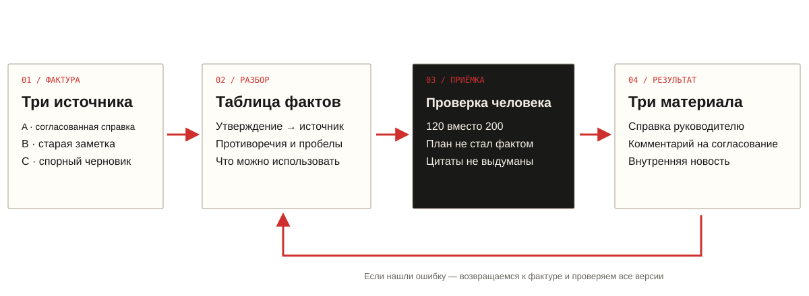
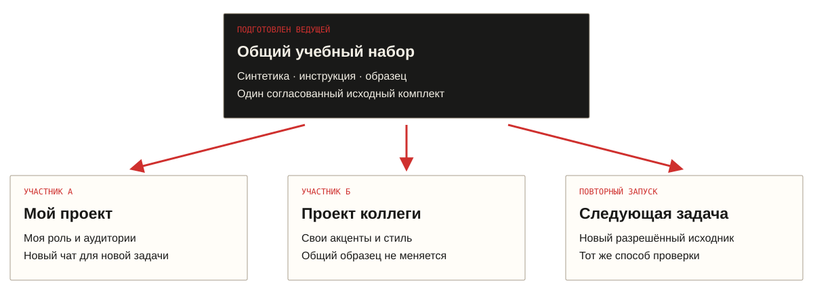
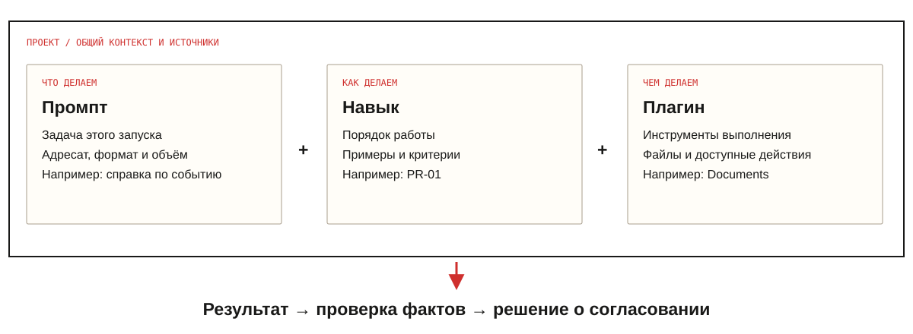
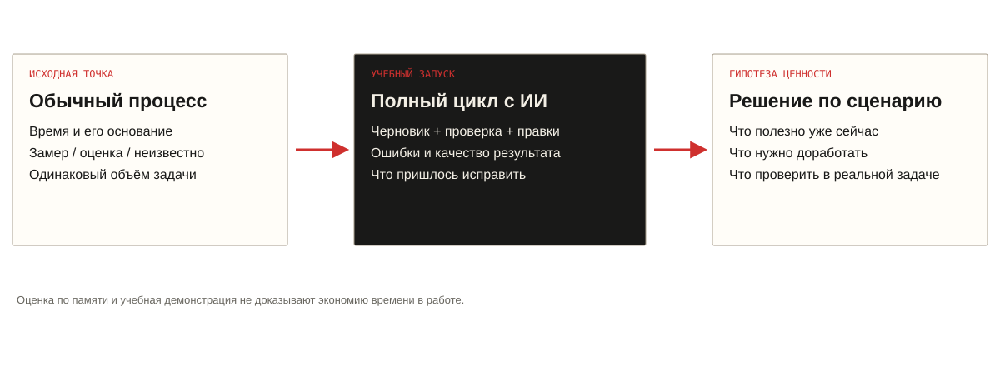

От чата — к рабочей системе.
Один исходник.
Три результата.
Каждый — проверен.
Первая встреча лаборатории для руководителей коммуникаций.

В папке уже есть конфликт.
Планируем открытие
120участников / месяц
12 ноября · Береговой
8 наставников · бесплатно
Регистрация обязательна
Старая заметка
200
В источнике явно указано:
показатель заменён справкой A.
Красиво.
Но на чём основано?
«Крупнейшая мастерская региона. Каждый выпускник получит работу».
Нет доказательств.
Нет согласованной цитаты.
Модель пишет после проверки.

Факты общие. Задачи разные.

Авторский резерв пакета в Word ↓Что именно мы делегируем?
«Перепиши абзац»
«Готовь материалы по правилам нашей команды»
«Разбери пакет, найди расхождения, создай файлы»
«По понедельникам проверь новые публикации»
результат · источники · границы · критерий приёмки
Регулярность требует отдельного триггера. Сам проект не начинает работать по расписанию.
Dots, Hermes и OpenClaw — короткие примеры агентного взаимодействия из программы. Установка в эту встречу не входит.
Общий контекст. Личная работа.

Схема принципа, не скриншот интерфейса. Доступность, права и способ копирования проверяются в аккаунте группы. Не меняем общие правила за всех.
Среду выбираем под результат.
Chat
Обсудить и уточнить
Вопрос, варианты акцентов, черновик, проверка отдельного утверждения.
«Каких фактов не хватает?»Work
Получить артефакт
Задать конечный документ, проверить созданный файл, внести точечные правки.
«Собери документ с реестром»Codex
Пройти процесс с файлами
Рабочая папка, исходники, правила и отдельные выходные файлы.
«Прочитай START.md и начни»Проекты: OpenAI ↗ · Веб и Work: OpenAI ↗ · Проверено 14.10.2026
Задание. Способ. Инструменты.

Прикреплённый SKILL.md можно читать как инструкцию. Это не доказывает нативную установку навыка. Повторная проверка тем же чатом не становится независимой автоматически.
Ваши 25 минут.
Запускаете
Новый чат → готовые вводные → запрос → реестр → подтверждение → три материала → проверка.
Открыть запросы ↗Проверяете с группой
Ищете расхождения, оцениваете акценты, принимаете или отклоняете результат. Установка не нужна.
Открыть образец ↗Не тратим практику на публичную установку. Используем только синтетический PR-01. Домашнего задания нет.
Настроить под себя.
Повторить без суеты.
 Инструкция повторения сервиса после курса ↗
Инструкция повторения сервиса после курса ↗23 октября: документы, аналитика и фактчекинг. Вопросы и пробелы фиксируем для следующей встречи.
Что показал эксперимент?

Заполнить решения группы ↗Паспорт хранится только в вашем браузере и скачивается в Markdown. Не вводите закрытые сведения.
Шесть встреч.
Одна рабочая система.
Передовой AI-контур и первый эксперимент
Первый проверяемый PR-процесс
Документы, аналитика и фактчекинг
Справка с картой источников
Тексты и переупаковка в Claude
Одна фактура — несколько аудиторий
Презентации как управленческий инструмент
Логика решения и прототип слайдов
Мультимодальный PR-продакшн
Работа с фото, видео и аудио
От прототипа к корпоративной песочнице
Пилоты, данные и требования
После каждой встречи остаются материалы, способ повторения и наблюдения для следующего шага. Сценарии корпоративного использования проверяются отдельно.